📊 指标均值 · 清晰呈现本类素材基准指标，帮你快速定位差距，校准优化方向
消耗(均值)
—增长量(均值)
—CTR (均值)
4.31%CVR (均值)
13.63%3s完播 (均值)
60.1%播放时长(均值)
14.8s📚 方法论沉淀 · 拆解开篇类型核心打法，吃透爆款底层逻辑，轻松拿捏创作节奏
🎬开篇方式细分· 还原头部素材的爆款开篇套路，直接参考高起量创作范式（推荐指数=消耗量级）
达人种草类-街头实测型⭐⭐⭐⭐⭐
达人以街头摆摊、地摊vlog形式现场帮路人体验洁面产品，通过多人即时效果对比形成强视觉冲击，真实场景+素人反馈建立高信任度，消耗量级最高达百万级，是洁面品类跑量王者开篇方式
明星背书类⭐⭐⭐
明星口播推荐或直播间切片背书，借助贾乃亮、温峥嵘、姜妍等明星影响力快速建立信任，常与大促福利结合形成转化闭环，适合有明星资源的品牌快速起量
痛点开篇类⭐⭐⭐
以猎奇画面、皱纹特写、皮肤问题等视觉冲击制造焦虑感，精准戳中油黄糙、黑头闭口等用户痛点后引出产品解决方案，3s完播率高但需配合后续内容承接
产品展示类⭐⭐
以产品质地特写、泡沫挤出等视觉画面开篇，配合痛点文案如草莓鼻的命根子吸引目标用户停留，适合产品外观有差异化卖点的素材
达人种草类-颜值效果型⭐⭐⭐⭐
达人展示白皙肌肤+惊叹式口播制造悬念，以好皮肤状态作为钩子吸引停留，适合有颜值达人资源且产品美白功效突出的素材
📋脚本框架· 标准化脚本流程拆解，素材组合直接照着用，降低创作试错成本（6 段）
A
【悬念钩子开篇】
⏱ 0-5s
3秒内抓住用户注意力，制造好奇或共鸣
📌 街头挑战悬念文案/痛点画面冲击/颜值效果展示/明星出镜背书
B
【用户痛点引入】
⏱ 5-15s
精准戳中目标人群皮肤问题，建立需求共鸣
📌 油黄糙/黑头闭口/越洗越黑/毛孔粗大等痛点口播或素人吐槽
C
【产品成分卖点】
⏱ 15-35s
展示产品核心功效和差异化成分
📌 洗卸养多合一/深层清洁毛孔/美白提亮/氨基酸温和/七子白古方等卖点轰炸
D
【效果对比验证】
⏱ 35-55s
通过视觉对比建立产品功效可信度
📌 只洗一只手臂对比/洗前洗后肤色对比/脏水猪油汤视觉冲击/多素人即时反馈
E
【功效成分背书】
⏱ 55-70s
强化产品信任度和专业背书
📌 明星证言/多用户口碑/古法工艺画面/成分特证展示
F
【价格福利促转】
⏱ 70-结尾
制造紧迫感引导即时下单
📌 买2送2/每天一块钱/比双11便宜/限时福利/免费试用等促销话术
☁️核心词云· 提炼高频重点标签，靠前标签即高机会，快速抓准流量密码（卖点 / 用户痛点）
✨ 卖点 · 20 词
深层清洁美白提亮洗卸养三合一去黑头去闭口泡沫绵密温和不刺激一洗即白去油去黄去糙微米级白泥洗后水润越洗越透亮全身可用古法手工七子白配方氨基酸洁面深入毛孔淡化暗沉剥壳鸡蛋肤感即时见效大容量高性价比
😣 用户痛点 · 20 词
脸油光黑头反复闭口粉刺暗沉蜡黄草莓鼻越洗越黑越洗越油毛孔粗大皮肤油黄糙皱纹老化卸妆残留清水洗脸洗不干净化学膜假滑多年污垢堆积婚礼丢脸素颜没气色斑点暗沉洗后紧绷敏感刺痛
🪞模特 / 对比 / 场景 三段画像
👤 模特画像
以25-45岁不同年龄段女性为主，涵盖建筑女工、农活大妈、外卖小哥等真实劳动者形象，强调素人真实感而非精致感，部分素材搭配小女孩、老奶奶等全家适用人群增加覆盖面。
🔁 效果对比方式
核心采用「只洗一只手/一只胳膊」的强烈黑白对比，配合洗脸水变「猪油汤」的脏水视觉冲击，以及洗后「白了、亮了、嫩了」的即时肤色提亮效果对比。
🎬 场景搭建
主打街头摆摊、地摊vlog等户外真实场景，通过现场帮路人洗脸的沉浸式体验建立信任；室内场景以直播间切片、达人口播为主，强调大促福利氛围。
💬常见爆款话术· 整理高转化爆款话术，直接复用提升素材起量率与吸引力（≥2 条素材出现，产品名已隐藏）
🚀跑量关键点· 跑量必备要素清单，逐项 check，确保创作不踩坑
- ① **街头实测场景** 以摆摊帮路人洗脸的沉浸式vlog形式，展示多人即时效果对比，真实反馈建立高信任度
- ② **强视觉冲击对比** 只洗一只手的黑白对比+猪油汤脏水奇观，让清洁效果肉眼可见、不言自明
- ③ **极致性价比话术** 每天一块钱、买2送2、比双11便宜等福利轰炸配合限时紧迫感促进即时转化
📈高光时序数据· 近 7 天日均真实播放进度数据
5/14 条素材有高光时序（覆盖率 35.7%）；关键转化点主要集中在 15-30s。点击/点赞/转发/流失关键点分别为 10/1/2/6 个。
内容策略与转化表现
无脚本文案
正向 13 · 流失 4 · 平均 14.4s
点击 10 / 点赞 1 / 转发 2 / 流失 4
点击 10 / 点赞 1 / 转发 2 / 流失 4
内容承接
正向 0 · 流失 2 · 平均 3.5s
点击 0 / 点赞 0 / 转发 0 / 流失 2
点击 0 / 点赞 0 / 转发 0 / 流失 2
“(猎奇画面) 肉块浇水特写，字幕：『常年清水洗脸』”
- 内容可解释率 10.5%：2/19 个关键点匹配到对应脚本或结构文案。
- 正向转化最强的是「无脚本文案」：出现 13 个点击/点赞/转发关键点，平均发生在 14.4s；典型内容“”。
- 主要流失风险来自「无脚本文案」：对应 4 个流失关键点，平均发生在 21.5s；需优先压缩或改写“”。
关键点内容证据
f9b1c1fd · 24.0s · 流失最大流失点（125.7）用户在此大量划走
3d48ec40 · 54.0s · 流失最大流失点（125.1）用户在此大量划走
8eaf85cb · 1.0s · 流失最大流失点（100.1）用户在此大量划走
41810452 · 7.0s · 流失最大流失点（88.4）用户在此大量划走
7ae474a7 · 5.0s · 流失最大流失点（3.7）用户在此大量划走
f9b1c1fd · 11.0s · 点击点击峰值（26.7）
f9b1c1fd · 15.0s · 点击点击骤降（-7.699999999999999）
3d48ec40 · 14.0s · 点击点击峰值（6.1）
🏆 代表素材关键帧拆解 · 品牌 / 非品牌各 Top5（按消耗降序）
🏪 品牌素材 Top5（按消耗降序）
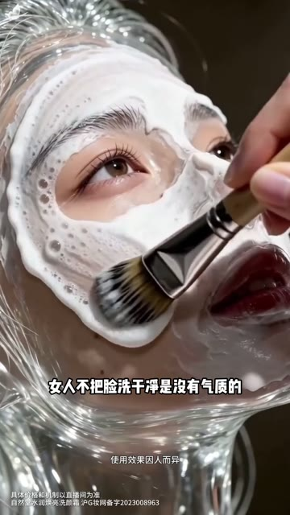
#1
消耗 — · 增长量 — · CTR 1.62% · CVR 14.97% · 3s完播 87.4% · 播放时长 37.2s
痛点引入
0-3s
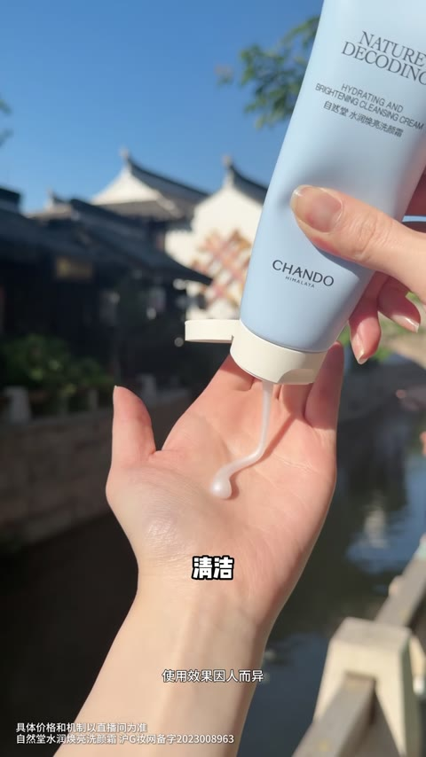
产品亮相
3-10s
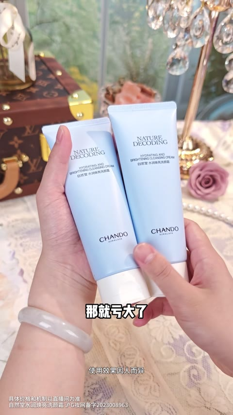
明星背书
10-16s
卖点轰炸
16-35s
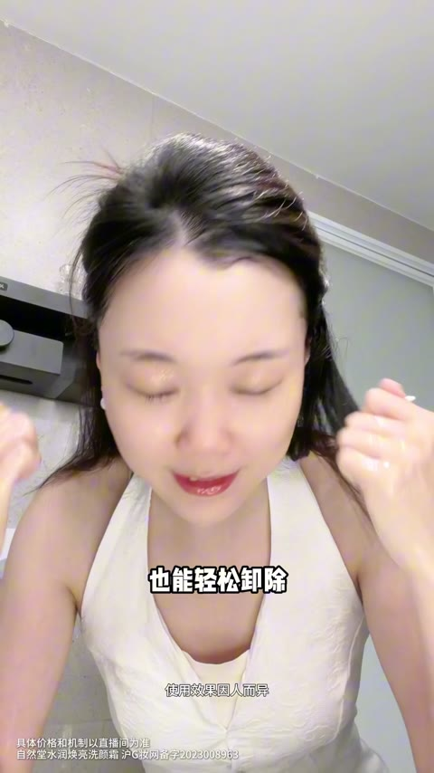
多场景演示
35-45s

#2
消耗 — · 增长量 — · CTR 1.29% · CVR 16.56% · 3s完播 33.3% · 播放时长 4.7s
开篇类型属于产品展示+多明星达人种草型。开篇以产品质地特写切入，展示一灰一白的双管洗面奶挤出效果，配合『草莓鼻的命根子』文案吸引目标用户。接着姜妍口播引出30+女性定位，强调素颜嫩滑肌的核心利益点。随后切换林允、陈紫函、张雨绮等明星种草片段，通过『空瓶证言』『巨嫩无比』等真实反馈建立信任。中段达人详解产品卖点：泥膜+洁面二合一、深入毛孔清洁、可卸淡妆防晒。结尾直播间主播展示超值套装组合，强调性价比和促销力度，引导下单转化。

痛点+明星开场
0-9s

达人证言
9-18s

卖点轰炸
18-29s

明星背书
30-39s

价格促销
40-52s
⚡ 黄金 3s Prompt🚀 妙思
近景特写女性手心托着一团灰白相间的洗面奶膏体，夕阳暖光打在产品上呈现高级质感。画面右侧露出产品包装，字幕大字弹出『嫩到怀疑人生！草莓鼻的命根子🍓』制造好奇。1.5秒后切到洗面奶被缓缓挤出的动态特写，灰白双色拉丝质地形成视觉记忆点。配音用成熟女声说『我想把这支洗面奶送给所有30+以上的女人』，精准锁定目标人群，制造『这说的就是我』的代入感。
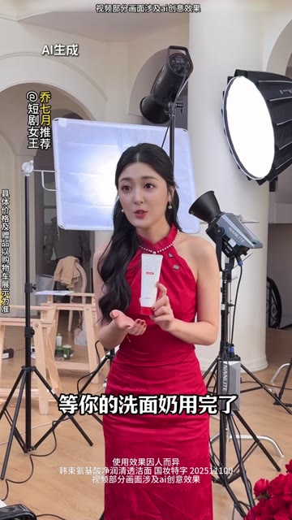
#3
消耗 — · 增长量 — · CTR 3.36% · CVR 14.62% · 3s完播 93.3% · 播放时长 43.5s
开篇类型属于达人口播+明星背书型。开篇达人乔七月直接抛出『洗面奶用完再买就不划算』的钩子话术，配合洗脸画面快速切入产品。接着展示韩束377美白洁面产品外观和囤货组合，通过贾乃亮直播间切片强调大促福利加码。重点展示『拍2送2』『39元』『一单用一年』等极致性价比信息，贾乃亮情绪激动喊出『直接抹个0』制造冲击力。穿插多位素人博主使用效果展示，强调『太好用了』『必备好物』等口碑证言。结尾再次强调『比618便宜比双11便宜』的限时福利，引导立即下单。
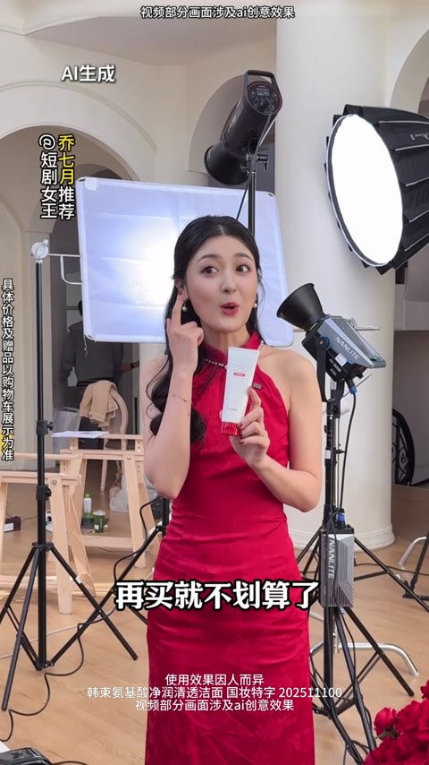
达人口播开篇
0-3s
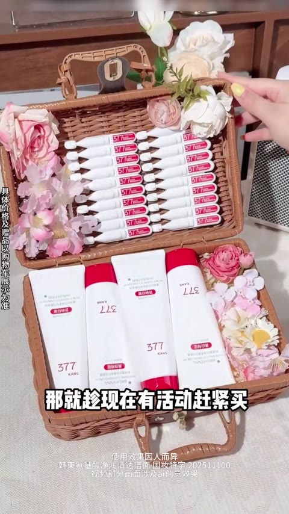
产品亮相
3-8s
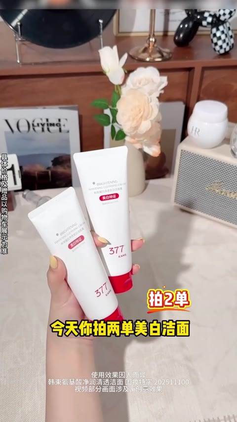
明星背书
8-15s
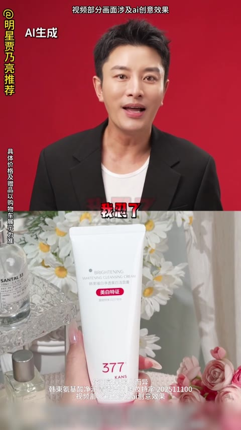
卖点轰炸
15-30s
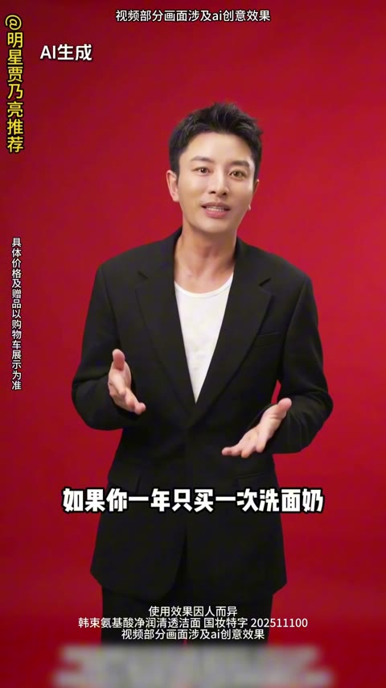
效果展示
30-50s
⚡ 黄金 3s Prompt🚀 妙思
中景镜头拍摄气质女性达人站在摄影棚内，左手持白色洁面乳产品，右手指向产品，面带微笑开口说『等你的洗面奶用完了，再买就不划算了』，语速快节奏紧凑制造紧迫感。第2秒快切洗脸特写镜头，女性脸上涂满白色绵密泡沫双手揉搓，画面干净明亮。前3秒用『不划算』话术+产品展示+使用场景三连击，快速建立产品认知和购买冲动。
无封面
#4
消耗 — · 增长量 — · CTR 1.51% · CVR 15.15% · 3s完播 81.0% · 播放时长 26.7s
—
—
—
—
—
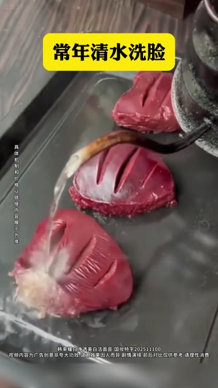
#5
消耗 — · 增长量 — · CTR 3.46% · CVR 14.49% · 3s完播 96.0% · 播放时长 45.9s
开篇类型属于痛点对比+明星背书型。开篇用猎奇的肉块浇水画面类比『常年清水洗脸』的皮肤老化问题，配合皱纹脸部特写制造焦虑感。接着明星贾乃亮直接点出普通洗面奶的局限性，抛出『皮肤油、黄、糙』的精准痛点，顺势引出韩束377白蛮腰洁面产品。重点展示韩束23周年庆大促的超值优惠机制，温峥嵘配合喊出『59一套、59两套』的价格锚点。穿插产品卸妆演示和素人使用证言，强调『洗卸养护四效合一』的核心卖点。结尾用『买2送2』『每天一块钱』『打一折』等极致性价比话术制造紧迫感，引导即时下单。
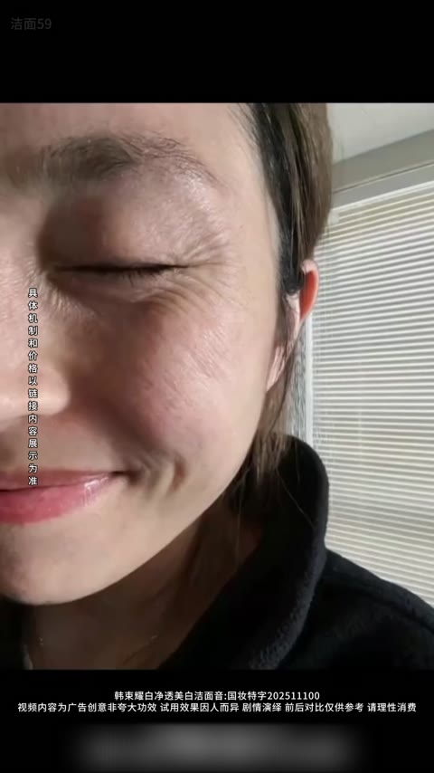
痛点+悬念开场
0-4s
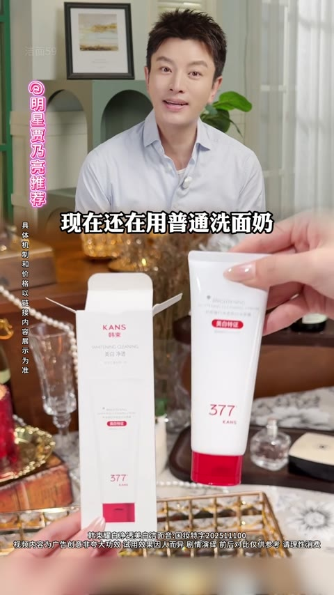
痛点引入
4-12s
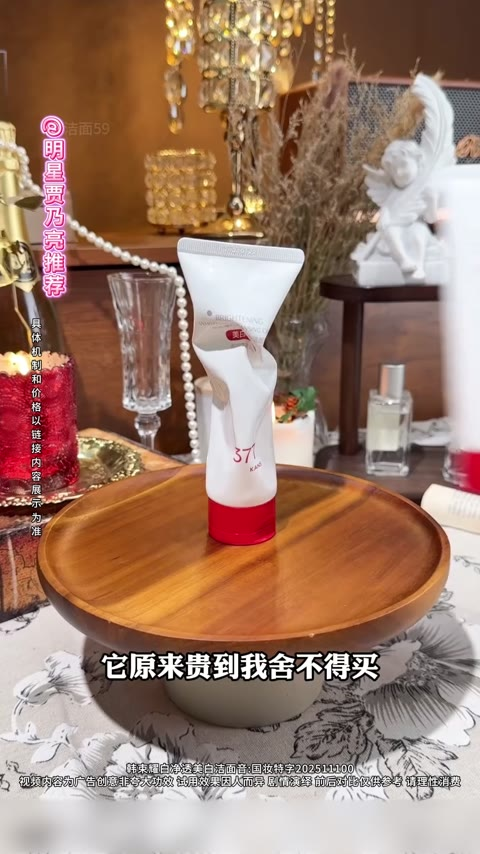
产品亮相
12-18s
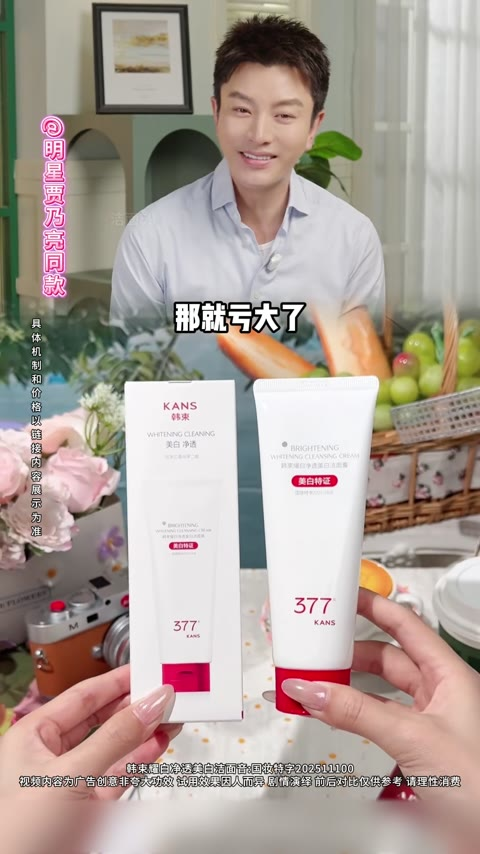
明星背书
18-35s
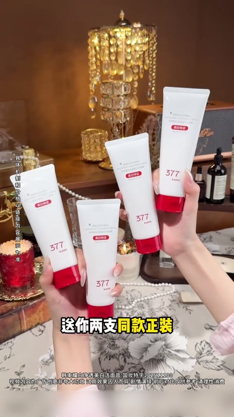
优惠机制
35-44s
⚡ 黄金 3s Prompt🚀 妙思
开场用极具冲击力的猎奇画面：三块红色生肉特写，水壶往肉上浇水，画面上方黄色大字『常年清水洗脸』。1秒后硬切女性面部皱纹特写，配合一声尖叫音效制造惊悚感。2秒时画面切换为双手拆开韩束礼盒的动作，字幕弹出『直到遇见它』。整体节奏快速紧凑，用猎奇视觉+痛点文案+悬念引出三重钩子在3秒内抓住用户注意力。
🏬 非品牌素材 Top5（按消耗降序）
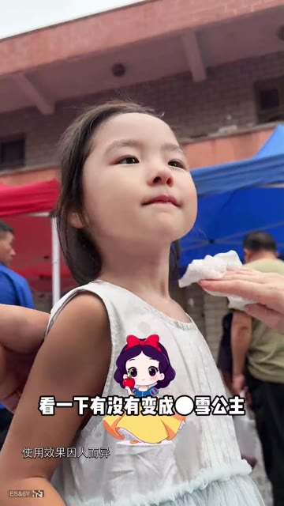
#1
消耗 — · 增长量 — · CTR 5.40% · CVR 13.56% · 3s完播 60.0% · 播放时长 14.9s
开篇类型属于达人地摊vlog+素人实测对比型。开篇以小女孩洗脸变『白雪公主』的可爱画面吸引停留，配合『刚出摊就有粉丝找上门』建立人气感。接着展示多位不同年龄素人现场体验，包括阿姨吐槽洗面奶『越洗越黑』的痛点共鸣、水泥大哥『只洗一只胳膊』的强烈黑白对比、老奶奶『生完孩子就没洗过』的震撼反差。重点通过路人惊叹『白了』『清爽』『舒服』的即时反馈建立信任。结尾达人收摊互动，引导评论区打卡下一个摆摊地点，形成粉丝参与闭环。

开篇悬念
0-4s
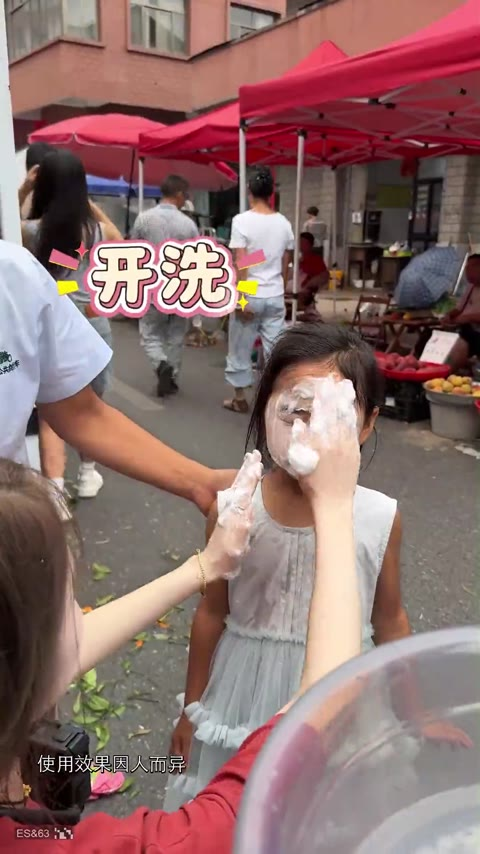
场景引入
4-17s
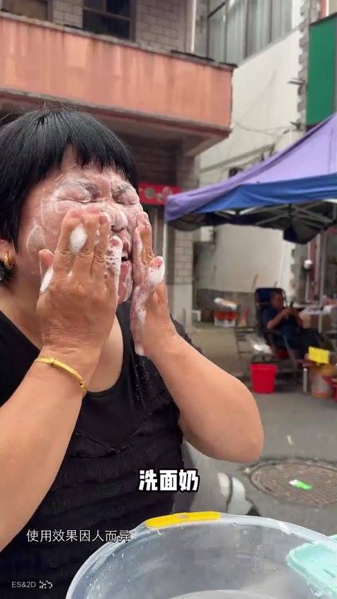
痛点共鸣
17-44s

效果对比
44-57s
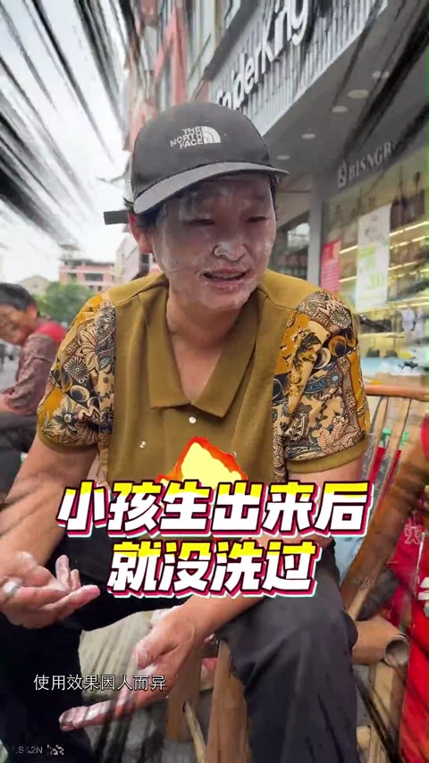
卖点轰炸
57-70s
⚡ 黄金 3s Prompt🚀 妙思
中景镜头拍摄可爱小女孩洗脸特写，成人手持纸巾轻轻擦拭她白净的小脸蛋，画面温馨治愈。配音用温柔女声说『看一下有没有变成白雪公主』，小女孩露出甜美笑容吐舌头回应『变啦』，屏幕弹出粉色公主贴纸动效。第3秒切换到热闹集市摊位全景，字幕弹出『刚出摊就有小粉丝家长找上门』制造人气悬念，吸引用户继续观看地摊实测。
无封面
#2
消耗 — · 增长量 — · CTR 4.04% · CVR 11.82% · 3s完播 55.4% · 播放时长 10.8s
—
—
—
—
—
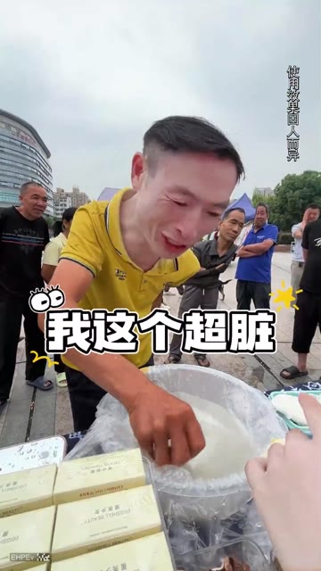
#3
消耗 — · 增长量 — · CTR 4.22% · CVR 14.05% · 3s完播 68.1% · 播放时长 18.1s
开篇类型属于达人街头挑战+沉浸式vlog型。开篇以『挑战摆摊一天帮100位大爷大妈搞颜色』的悬念话术切入，快速展示脏水、洗头、洗脸等视觉奇观制造好奇。接着体育老师挑战只洗一只手，对比效果成功引发围观。重点展示外卖小哥、农活大妈等不同人群洗脸过程，『猪油汤』脏水形成强视觉冲击。穿插多位用户『比洗面奶好』『洗得好干净』等真实好评，建立信任背书。『肚皮哥』从不洗脸却被洗白的极端案例成为活广告，引爆现场人气。结尾摊主出镜介绍『七子白金面皂』并引导进入直播间完成转化。
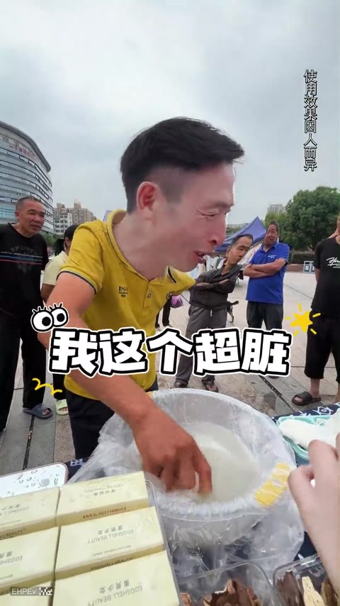
开篇悬念
0-3s
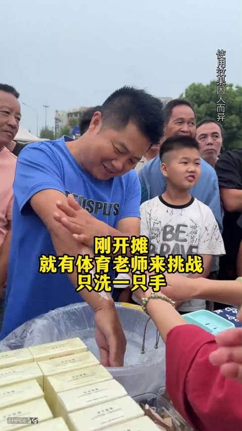
产品亮相
3-12s
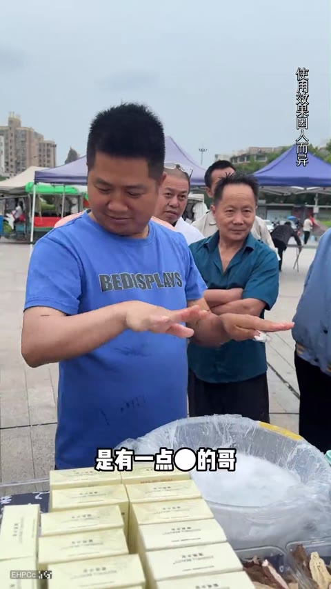
效果对比
12-25s
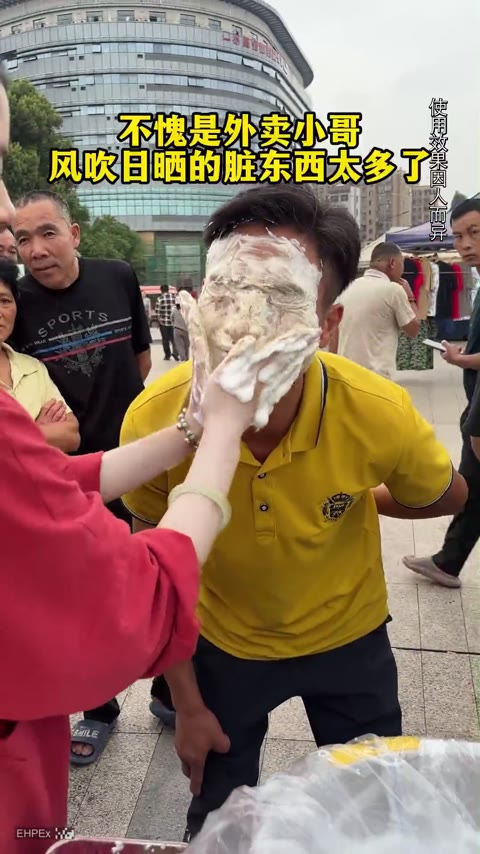
多人验证
25-50s
用户证言
50-70s
⚡ 黄金 3s Prompt🚀 妙思
快节奏街头摆摊场景，第1秒特写浑浊脏水盆+『挑战摆摊一天』字幕弹出，配合动感电子BGM制造悬念；第2秒切大叔满头泡沫洗头画面+『帮100位大爷大妈搞颜色』网感文案，『搞颜色』三字放大强调；第3秒切体育老师伸出双手准备挑战的特写，旁白说『只洗一只手』。整体节奏紧凑，用脏水视觉冲击+网感文案+挑战悬念三重钩子，3秒内完成注意力捕获。
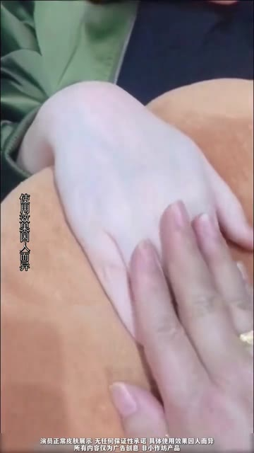
#4
消耗 — · 增长量 — · CTR 5.37% · CVR 15.89% · 3s完播 56.4% · 播放时长 16.6s
开篇类型属于达人颜值+效果展示型。开篇用模特白皙手臂和侧脸皮肤特写配合『第一次用七子白皂我都疯了』的惊叹式口播制造悬念。接着引入一条极端差评『洗出猪油汤』制造冲突，随即解释这是大牌洁面的化学膜和硅油被清出，将负面评价反转为产品深层清洁的证据。中段穿插中药材采摘、研磨、制皂的古法工艺画面，建立天然手工信任背书。重点展示用户从『水浑浊』到『水变清、脸像剥壳鸡蛋』的效果反转。结尾用『3000块皂免费试用、不用先掏钱、先到先得』的促销话术引导进直播间转化。
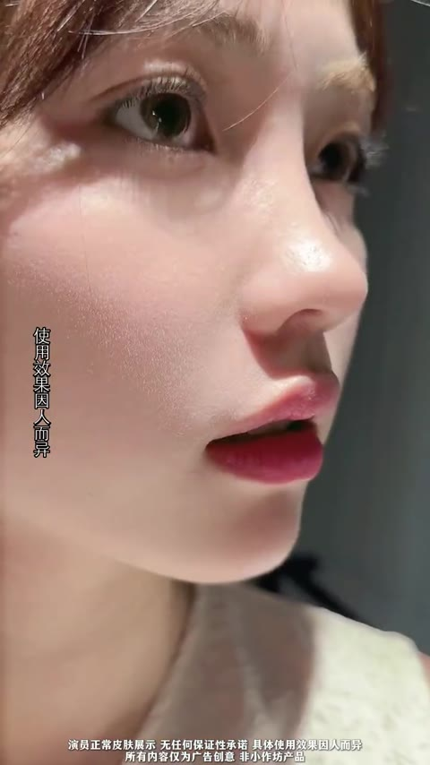
开篇效果展示
0-3s
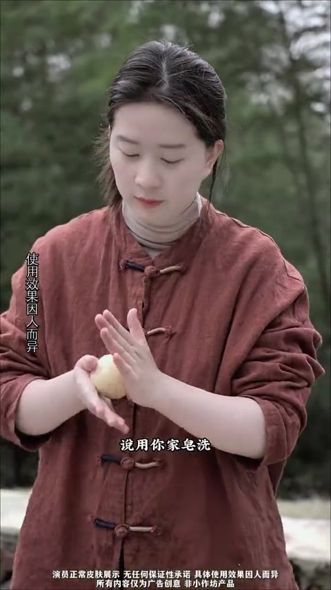
痛点引入
3-14s
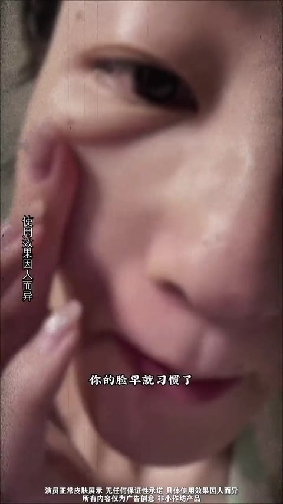
原理解析
14-32s
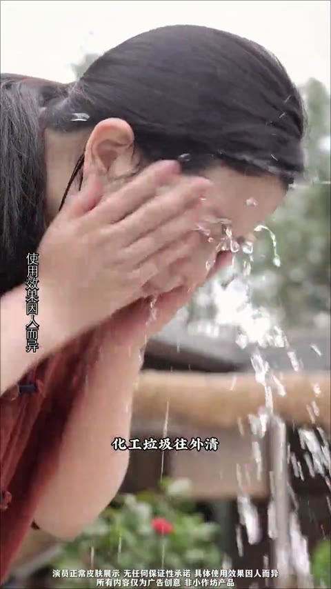
产品亮相
32-42s
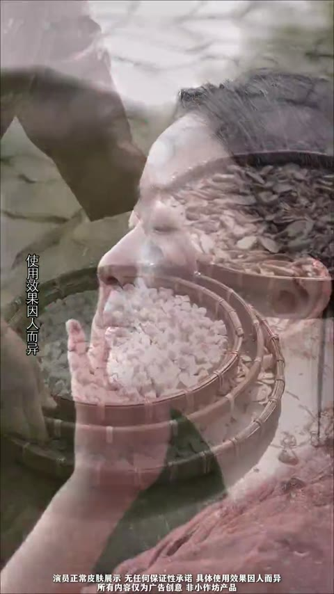
效果反转
42-52s
⚡ 黄金 3s Prompt🚀 妙思
近景特写女性白皙手臂，另一只手轻柔抚摸，背景为暖橙色调，画面停留1秒切换至侧脸特写，展示细腻透亮肤质。配音用略带惊喜的女声说『第一次用七子白皂，我都疯了』，语气夸张带悬念感。整体节奏前1秒静态皮肤质感展示，后2秒配音+侧脸切换，用『疯了』这个反常规表达制造好奇点，让观众想知道为什么疯了。
#5
消耗 — · 增长量 — · CTR 3.74% · CVR 14.74% · 3s完播 67.5% · 播放时长 14.0s
开篇类型属于街头实测沉浸vlog型。开篇以『下周要结婚的姐姐』制造情感钩子，展示建筑女工担心婚礼丢脸的痛点。接着展示首位用户洗脸后的惊喜效果，用『越洗越透亮』点题核心功效，并通过她远程呼叫姐妹制造社交裂变感。随后三位女工集体体验，用群体满意度证明产品普适性。重点展示男性工人体验环节，强调『泡沫绵密』『气味芳香』『油也能洗掉』等卖点，旁白升华『洗掉一身疲惫』的情感价值。结尾主播手持产品总结，强调靠老顾客好评支撑，用『下一站你们来定』引导互动关注。
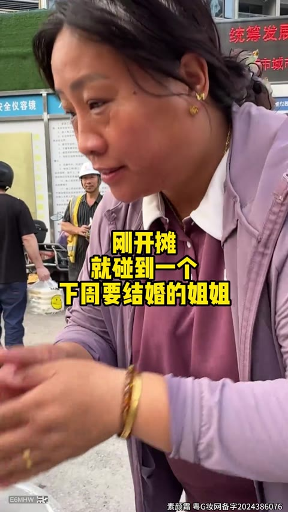
痛点+悬念开场
0-5s
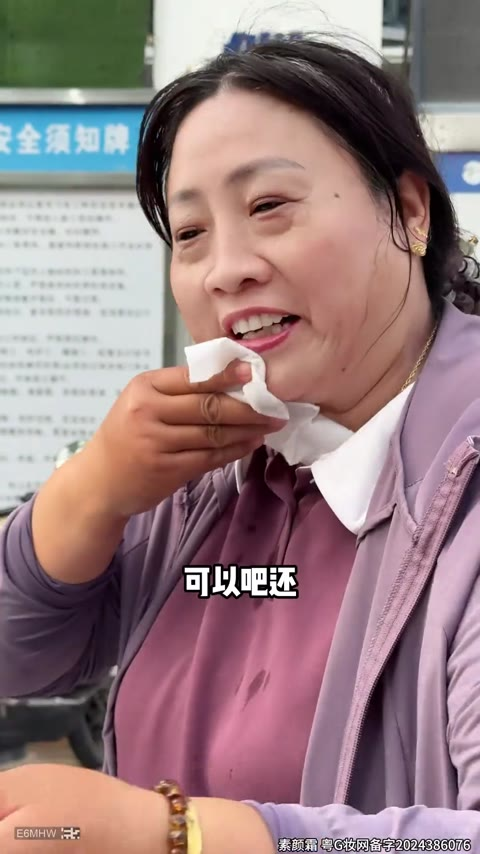
产品演示
5-10s
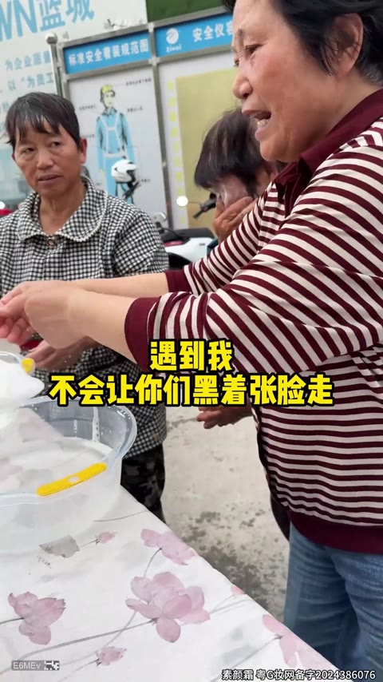
用户证言
10-22s
卖点轰炸
23-45s
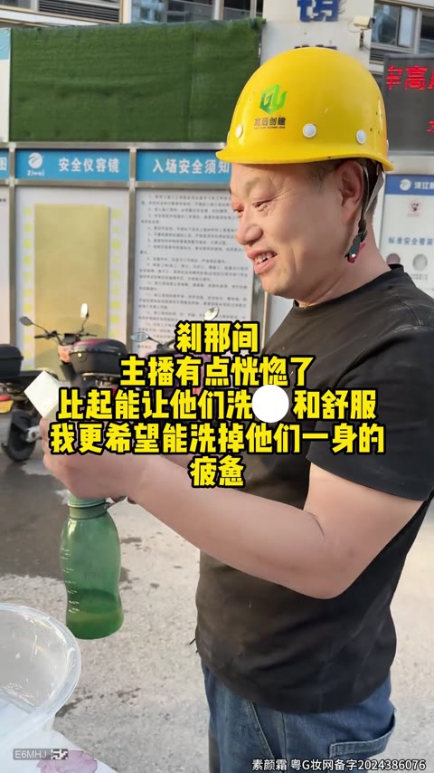
情感升华
46-53s
⚡ 黄金 3s Prompt🚀 妙思
工地场景中景镜头，一位穿紫色外套的建筑女工站在路边摊位前，手拿安全帽略显疲惫。旁白用轻快语气说『刚开摊就碰到一个下周要结婚的姐姐』，字幕同步弹出。第2秒切到女工往手上涂抹洗脸皂的近景，配音继续『说她不想在婚礼上丢脸』制造情感悬念。节奏轻快自然，用『结婚』『丢脸』两个关键词激发好奇心。